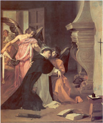
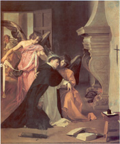

|  |
|---|
Textum a P. Marc Taurini 1967 editum
recognovit Enrique Alarcón et instruxit
recognovit Enrique Alarcón et instruxit

|  |
|---|

[...]
[PM2] Petrus Marsilii, Cronicae Regis Iacobi, cap. 47 Sentiens etiam fugitivos hereticos de Tolosanis, Biterrensibus et Carcassonensibus partibus ad partes Cathalonie velut ad secreti sinus latibulum evolare, ac more cancri sermonem eorum serpere in plurium terre partium ulcerosam corruptionem, tractavit ut Rex, qui eius adherebat consiliis et salutaribus favebat monitis, pro terris habitis et habendis a Romana curia peteret et obtineret inquisitores heretice pravitatis. Conversionem etiam infidelium ardenter desiderans, rogavit eximium doctorem sacre pagine magistrum in theologia Fratrem Tomam de Aquino eiusdem ordinis, qui inter omnes huius mundi clericos post Fratrem Albertum philosophum maximus habebatur: ut opus aliquod faceret contra infidelium errores, per quod et tenebrarum tolleretur caligo et veri solis doctrina credere volentibus panderetur. Fecit magister ille quod tanti patris humilis deprecatio requirebat: et Summam que contra Gentiles intitulatur condidit, que pro illa materia non habuisse parem credatur. Studium linguarum pro fratribus sui ordinis Tunicii et Murcie statuit, ad que fratres Cathalanos electos destinari procuravit. Qui in multum fructum animarum profecerunt, et in sue decoratum speculum nationis.
[...]